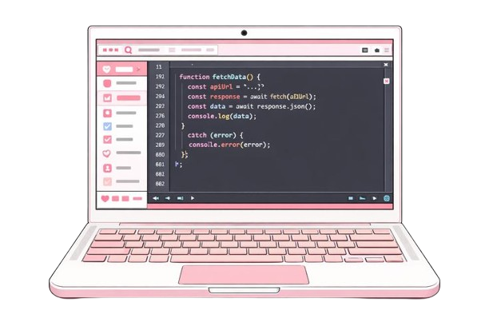

Welcome to my Webpage!
Welcome to my personal website!
Here you will find my upcoming coursework: 3135 course page

About Me
A Computer Science student with a concentration in Human Computer Interactions. Also a barista, a gamer and an avid nap enjoyer.